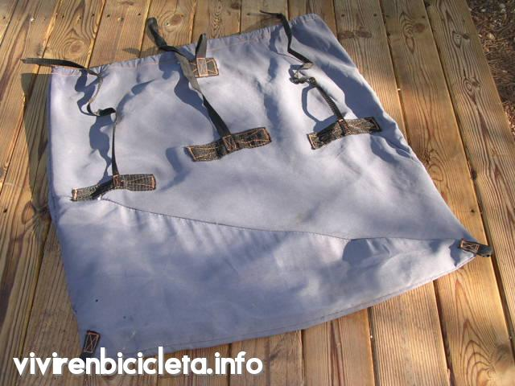
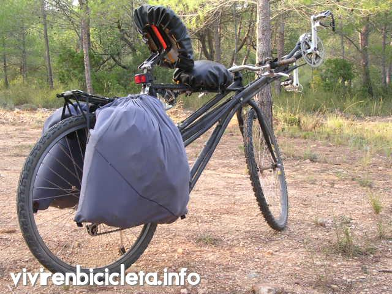

Alforjas artesanales para bicicleta reclinada
Contenido
Alforjas artesanales con forma de saco hechas con sombrillas de playa y otros materiales de desecho.
Objetivo
Me propuse hacer unas alforjas con las siguientes características:
- Máxima sencillez: nada de broches, cremalleras, compartimentos, ni bolsillos.
- Mínimo peso. Me propuse un máximo de alrededor de 200 gramos por alforja.
- Gran capacidad. No quería tener que llevar parte del equipaje sobre el portabultos.
- Sin armadura, para que no ocupen espacio cuando estén vacías.
- Que se puedan usar como mochilas.
Características de las alforjas
El material de la alforja es la tela de una sombrilla de playa rota que encontré tirada. Hay sombrillas de playa cuya tela es similar a la tela de los paraguas, que no es bastante resistente. Otras alforjas, por ejemplo las que se usan en los establecimientos de hostelería, usan una auténtica tela de algodón, gruesa y pesada. La tela que yo empleé era de un tercer tipo que no identifiqué: parecía tela de gabardina. El color original estaba comido por el sol pero la tela parecía aún resistente. El material disponible me dio las medidas: de la sombrilla saqué cuatro cuadrados de unos 60 centímetros de lado, más un margen para las costuras y dobladillos. 
Quien tenga nociones básicas de costura y sepa usar una máquina de coser no va a tener ninguna dificultad. Quien no sepa coser va a tener que aprender antes o pedir ayuda. Para no deshilachar la tela en las uniones, hice un dobladillo doble. El lado superior de la alforja debe llevar un dobladillo especial que permita pasar un cordón de cierre.
Instrucciones para hacer las alforjas
El procedimiento es sencillo:
- Hacer un dobladillo simple a todo el perímetro de la boca de la bolsa.
- Hacer un segundo dobladillo más ancho, que deje un canal como de un centímetro, y coserlo junto al cosido del primero. Este cosido del segundo dobladillo tiene que empezar y terminar hacia la mitad del lado exterior de la alforja, pero tiene que haber un espacio de un par de centímetros sin coser para poder acceder al cordón.
- Meter un cordón. Yo usé un largo cordón de unas zapatillas deportivas. Los cabos deben salir por el hueco que dejamos en el segundo dobladillo.
También las correas que se enganchan al portabultos son materiales que encontré en la playa que antes servían para agarrarse a ciertas tablas de surf infantiles.
Al principio probé a sujetar varios tipos de ganchos a las correas. Estos ganchos eran de plástico o de metal, pero tarde o temprano se rompían o deformaban. Al final opté por la solución más simple: anudar las correas al portabultos. El aspecto final era estupendo. Sin embargo, al poco de empezar a meter el equipaje descubrí que la forma de sobre limitaba la capacidad. Para llevar menos equipaje puede servir, pero a mí no me cabían todas las cosas. Además, con esa forma el punto de mayor capacidad era el centro de la alforja, lo que dificultaba acomodar el equipaje más voluminoso (tienda, saco, manta...) sin desaprovechar el espacio. 
Decidí reformar las alforjas poniéndoles un fondo. Una nueva sombrilla de desecho, del color verde de la cerveza Heineken, me proporcionó el material que necesitaba: una tela fuerte. Descosí las dos piezas de la alforja por sus tres lados salvo cerca del canal del cordón. Les cosí en medio tres piezas de tela verde. Tuve que hacer el fondo en tres partes por las limitaciones del material original. De disponer de una tela o lona entera mayor, es mejor recortar una sola pieza y así evitar hacer costuras y ganar resistencia.
Conclusiones
Tras añadir el fondo a ambas alforjas, éstas pesaban 224 y 207 gramos, pero podía poner todo mi equipaje sin problemas, incluso el aislante (doblado en lugar de enrollado). Las alforjas llenas y con el equipaje bien distribuido no interfieren con las ruedas. Con estas alforjas recorrí unos cientos de kilómetros y dieron buen resultado. El principal problema que tuve es que varias correas de sujeción se rompieron (en diferentes viajes) por el punto en que estaban cosidas a su alforja. La única reparación posible en ese momento fue coserlas de nuevo, lo que siempre es laborioso.